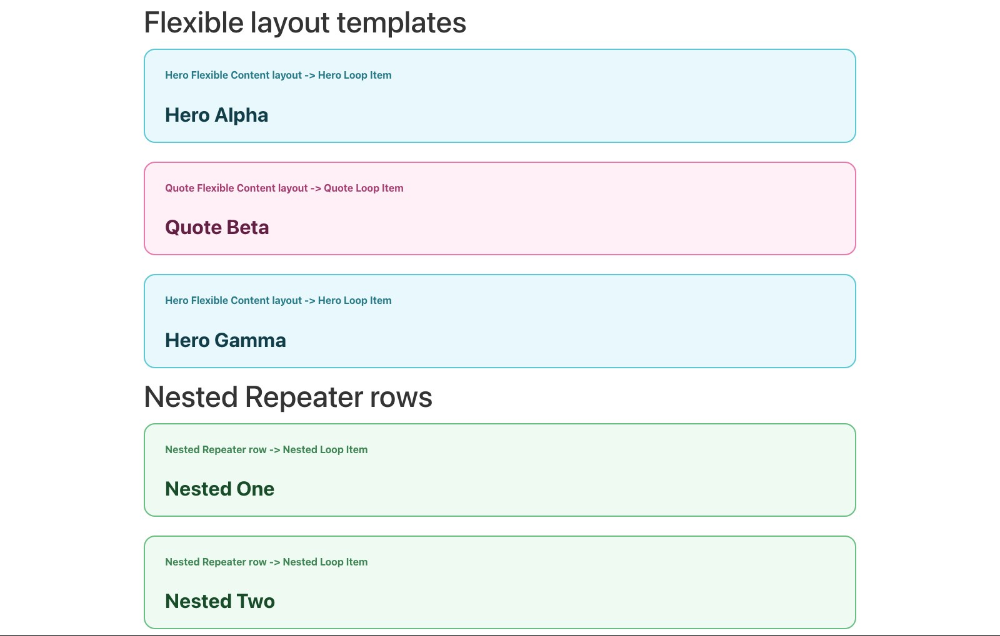
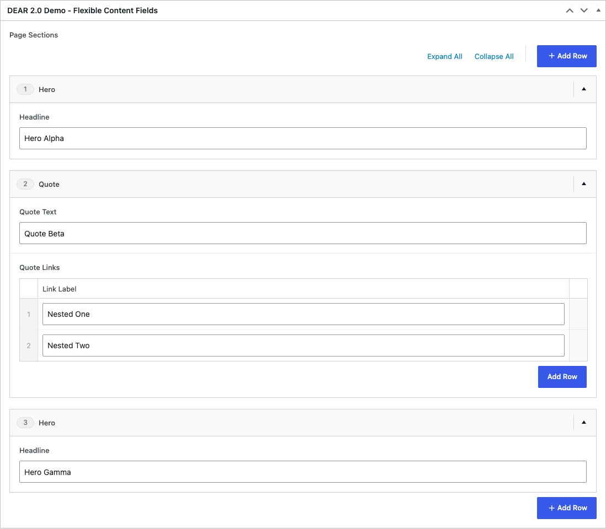
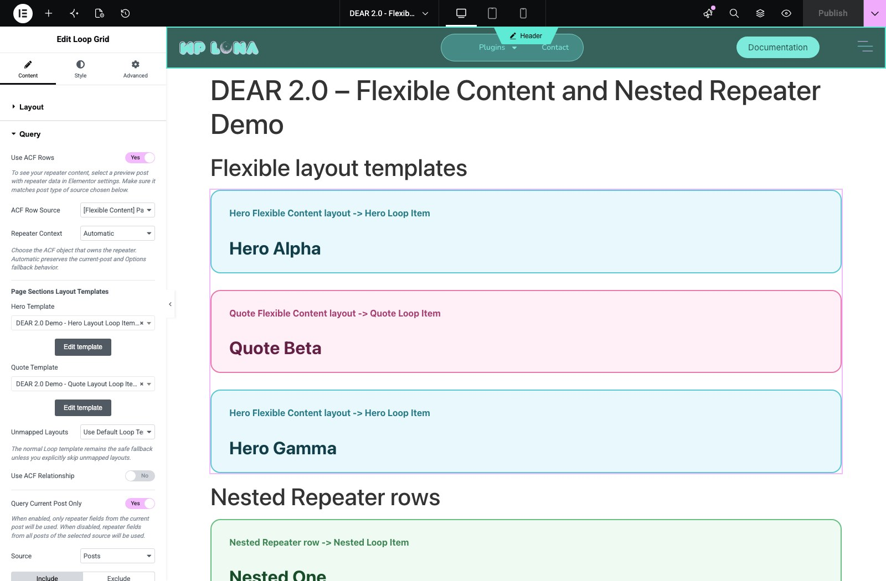

Flexible Content Templates
Pro feature: Requires Dynamic ACF Repeater for Elementor Pro.
The ACF Flexible Content skin renders Flexible Content rows with different Elementor Loop Items. You define the layouts in SCF/ACF and design every mapped template in Elementor.
The plugin does not generate a hero, quote, card, or fallback design. The examples below are ordinary Loop Items created for the demo.
Example result

1. Create and populate the Flexible Content field
Create a Flexible Content field with the layouts and subfields your page builder needs. Add rows to a source post so each layout has preview data.

2. Create one Loop Item per layout
For each layout:
- Create an Elementor Loop Item.
- Open ACF Repeater Loop Settings.
- Choose that layout under ACF Row Schema for Loop.
- Set Elementor's preview source to a post containing the layout.
- Design the item and connect its subfields with Repeater dynamic tags.
The schema selector keeps each template's field list focused on that layout.
3. Configure the Loop Grid skin
Add a Loop Grid and choose a normal default Loop Item. Then:
- In Query, enable Use ACF Rows.
- Select the Flexible Content field under ACF Row Source.
- Under Choose template type, select ACF Flexible Content.
- Map each generated Layout Template control to its Loop Item.
- Set Unmapped Layouts to either Use Default Loop Template or Skip Row.

Fallback behavior
Use Default Loop Template is the safe default. An unmapped layout renders through the Loop Grid's normal template.
Choose Skip Row only when an unmapped layout should produce no frontend output. This is useful during a staged rollout, but it can hide newly added layouts until their template mapping is configured.
Rendering behavior
- Layout order follows the Flexible Content row order.
- Mapped templates render only for their matching layouts.
- The default Loop template remains Elementor's ordinary fallback.
- The plugin temporarily selects the mapped template for that row; it does not permanently alter the Loop Item or inject additional markup.
- Existing top-level Repeater widgets are unaffected by the Flexible Content skin.
Flexible Content with nested Repeaters
When a layout contains a Repeater, you have two choices:
- Render the outer layout through a mapped template and use its fields in that Loop Item.
- Select the inner Repeater as a Nested Repeater source and flatten its child rows into their own Loop Grid.
Choose based on which level should become an Elementor Loop Item.